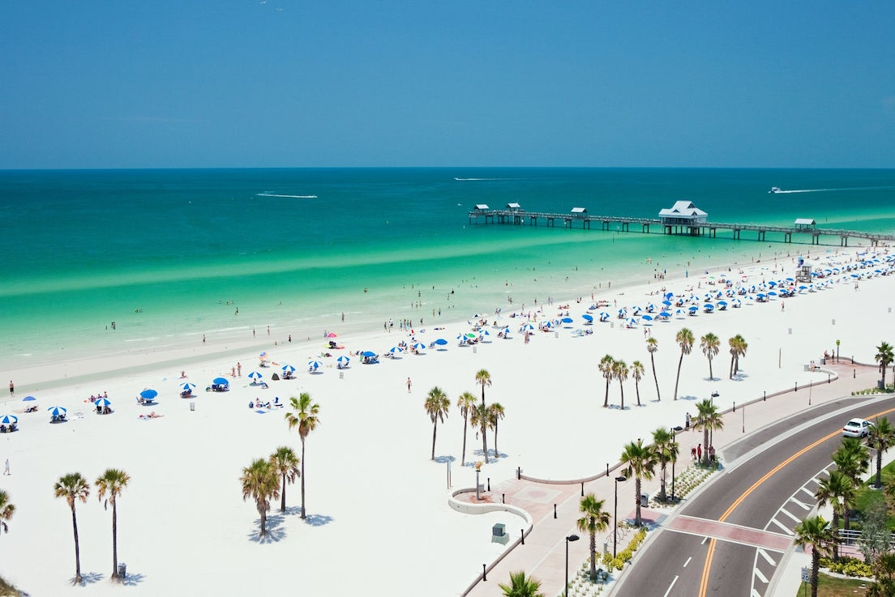
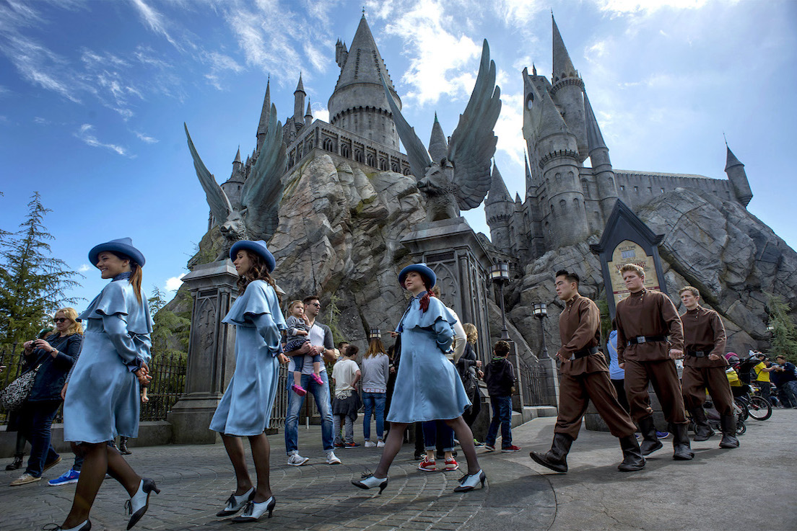
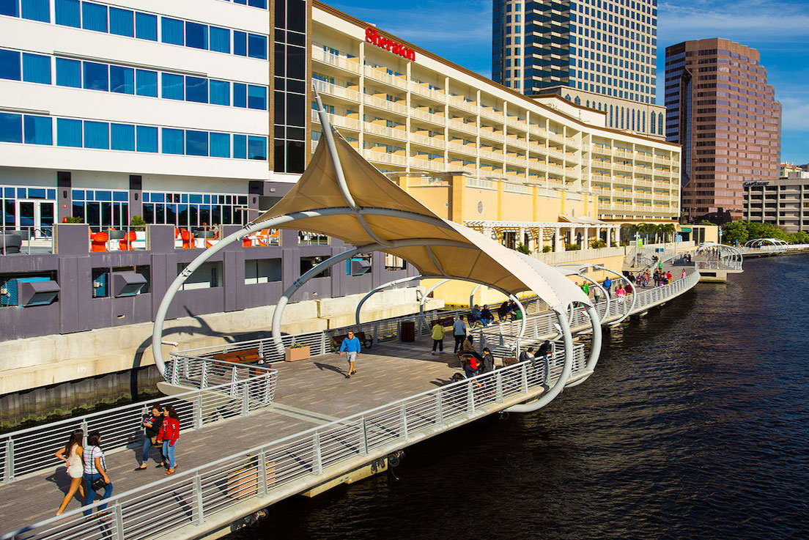
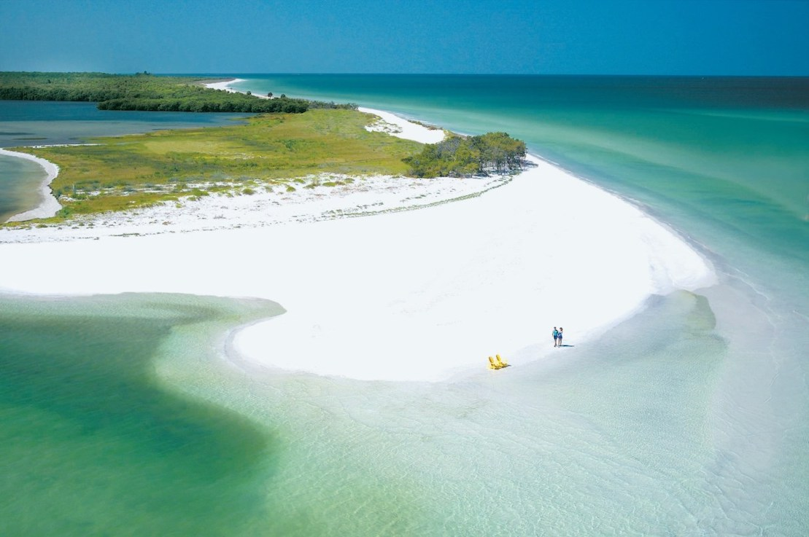
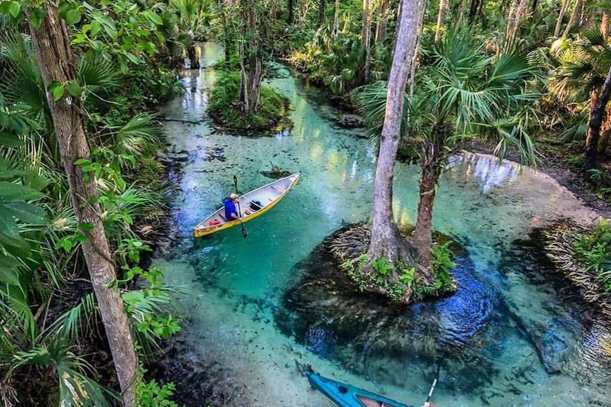

Clearwater Beach is one of Florida’s most popular beaches
and was named nation’s #1 beach in 2018 by Trip Advisor. Besides the clear blue water, you’ll also find
restaurants, hotels, and much more. Clearwater Beach also host an annual Sugar sand festival at pier 60, a
17-day festival that contains 21,000 square foot exhibit of sand sculptures. Read more

Universal Studios Orlando is one of the must-visit
destination for families. The resort contains three theme parks, each with its unique activities and rides.
Explore the The Wizarding World of Harry Potter at Island of Adventure, Enjoy the water park and at Volcano
Bay,
and the Universal Citywalk which features dining, shopping, and entertainment.

Tampa Riverwalkis a 2.4-mile path surrounding Tampa Bay
and are filled with attractions that can be enjoyed by everyone of all ages including the Florida Aquarium and
Glazier's Children Museum. The Riverwalk also hold events throughout the year, you can check their official
website for events happening during the time you are visitting as well as other events in downtown Tampa.

Caladesi State Park is an island off of Florida’s Gulf
Coast
and is only accessible by boat! There are a variety of activities you can enjoy such as boating, hiking,
paddling, swimming, and many more. There are also concessions and restaurants available and a marina for
boat
camping.

King's Landing is a nature theme park that offers self
guided
padding and tours of Rock Springs Run, one of the small river that feeds the Wekiwa River. Vessels are
available
for rent from $49, or you can bring your own for a cheaper rate of $10 per person ($5 for kids).
Madame Tussauds is a museum that features highly realistic
wax figures of famous people and characters such as historical figures, TV stars, musicians, and super heroes.
General admissions starts from $33.99 per person.